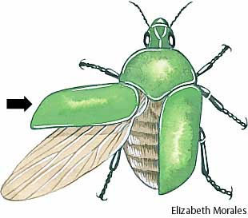
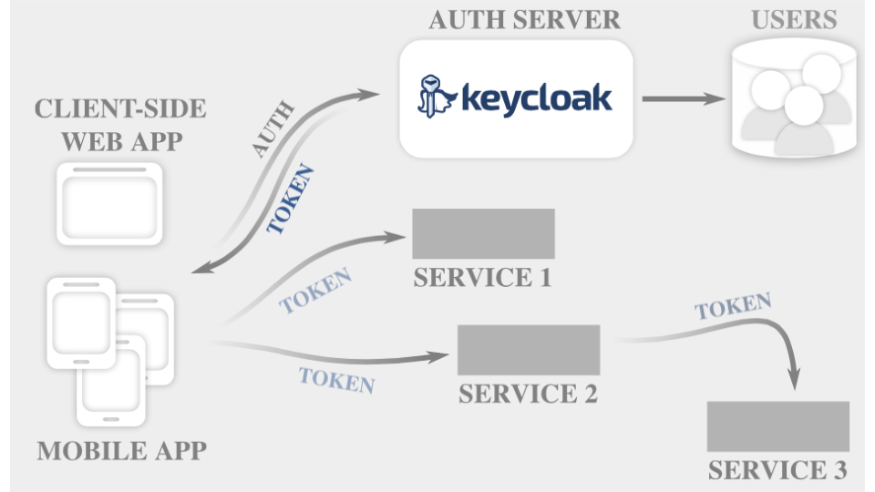
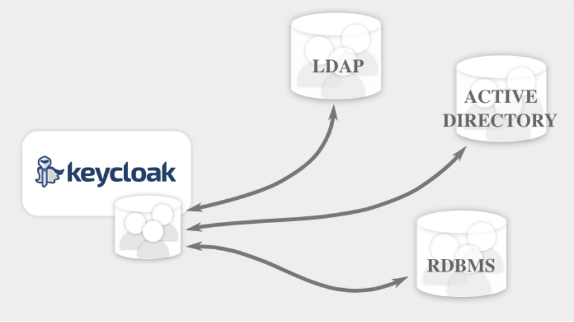

Security Technologies in JBoss Middleware
Introduction to WildFly, Elytron and Keycloak
Author: Peter Škopek / JBoss by Red Hat / @pskopek
What is WildFly?
It is very flexible, lightweight, managed application runtime.
It is extremely developer friendly with lot's of examples (quick starts).
Highlights - ops
- Fast Startup
- Ultimate Web Performance & Scalability
- Exceptionally Lightweight
- Customizable Runtime
- Unified configuration & Management
- Domain & Standalone Management
Highlights - devs
- Java EE 7
- Modern Web
- Modular Java
- Fast Linking & Concurrent Loading
- Easily Testable / Arquillian
Based on the Best of Open Source
- Hibernate
- Narayana
- Infinispan
- IronJacamar
- RESTEasy
- Weld
- HornetQ
- JGroups
- Apache CXF
- Arquillian
- ...
Try it
Download WildFly at http://wildfly.org/downloads/
OpenShift Cartridge: https://developers.openshift.com/en/wildfly-getting-started.html
Documentation: https://docs.jboss.org/author/display/WFLY9/Documentation
Elytron
WildFly Elytron is a new WildFly sub-project which is completely replacing the combination of PicketBox and JAAS as the WildFly client and server security mechanism.
What does the word "elytron" mean?
An "elytron" (ĕl´·ĭ·trŏn, plural "elytra") is the hard, protective casing over a wing of certain flying insects(e.g. beetles). 
WildFly Elytron Project
GitHub Repository: https://github.com/wildfly-security/wildfly-elytron
Issues: https://issues.jboss.org/projects/ELY
Elytron Subsystem Repository: https://github.com/wildfly-security/elytron-subsystem
OpenShift:
rhc app create <APP_NAME>
https://raw.githubusercontent.com/openshift-cartridges/openshift-wildfly-cartridge/elytron_integration/metadata/manifest.yml
WildFly Elytron: Pieces
Authentication Client
- XML based configuration
- API for direct control
WildFly Elytron: Pieces
PasswordFactory API/SPI
- Implementation of numerous password types
- Various hashed / salted representation
- Mechanism specific representations e.g. Digest/SCRAM/OTP
- Some level of transformation
WildFly Elytron: Pieces
Security Realms
- Integration point with account store
- Two modes of operation
- Credential Acquisition
- Evidence Validation
- Returns AuthorizationIdentity
- Also have modifiable realm API/SPI
WildFly Elytron: Pieces
Security Realm Implementations
- Legacy properties file
- JDBC
- LDAP
- File based
WildFly Elytron: Pieces
Security Domain
- Authentication Starts Against This
- Aggregation of security realms
- Associated NameRewriter and RealmMapper
- Returns SecurityIdentity
- getRoles based on RoleMapper
- getPermissions based on PermissionMapper
WildFly Elytron: Pieces
SASL Mechanisms (Based on JBoss SASL)
- Digest
- IEC-9798-3
- External
- GS2
- GSSAPI
- Local
- Plain
- Scram
- OTP
WildFly Elytron: Pieces
SecurityDomainSaslConfiguration
- Combines security domains with SASL mechanisms
- Mechanism selection based on policy and available credential handling
WildFly Elytron: Pieces
HTTP Authentication Framework
- SASL pattern for HTTP
- Adding mechanisms, sharing with SASL where possible SecurityDomainHttpConfiguration
WildFly Elytron: Pieces
- JACC Implementation
- WildFly Security Manager
- Replacement PicketBox Vault Implementation
- SSL Utilities
WildFly Elytron Subsystem
- Plan to merge to WildFly Core
- Component assembly approach
- Entirely capabilities and requirements based
Keycloak
- Out of the Box Security Server
- extensive and usable management UI
- Modern standards
- OAuth2, OpenID Connect, SAML2
- Modern use cases
- REST endpoint security, Mobile, IoT, Cloud…
- Value features
- Identity Brokering, Social Brokering, User Federation, Adapters
Keycloak Overview
Protocols
- OpenID Connect
- SAML 2.0
Authentication
- Authenticate with Keycloak Realm
- Login forms provided by Keycloak
- Two-factor authentication
- Requires SSL
- Passwords are salted and hashed with PBKDF2
- Iterations configurable
As simple as this
Application Integration
- Keycloak Client Adapters
- OpenID Connect Resource Provider library
- SAML2 Service Provider library
Client Adapters
- JBoss EAP & WildFly
- JBoss Fuse
- JBoss BRMS
- JavaScript
- NodeJS
- Mobile (Apache Cordova and Native)
- Spring
- Tomcat, Jetty
- More coming (contributions welcome!)
Admin Console
- Configure and manage everything from one console
- Including settings, applications, services, users, permissions and sessions
Account Management
- A console for users to manage their own accounts
Single Sign On
- Web SSO
- Enterprise/Desktop SSO Bridge (Kerberos)
- Single Sign Out
- Remote Sign Out
Themes
- Brand login pages and account management to integrate with your corporate brand
- HTML templates for more than just styling
Login Flows
- Required actions
- Recover password
- Two factor authentication
- Registration
Password Policies
- Set required complexity for passwords
- Prevent reuse of old passwords
- Require regular updating of passwords
- Set hashing intervals
User Federation
- Sync users with external directories
- Read-only or read-write 
Identity Brokering
- Allow external users to sign on
- Supports sign on with social networks

Try Keycloak
Download at http://keycloak.jboss.org/keycloak/downloads
Documentation: http://keycloak.jboss.org/docs
OpenShift:
rhc app create <APP_NAME>
http://cartreflect-claytondev.rhcloud.com/github/keycloak/openshift-keycloak-cartridge